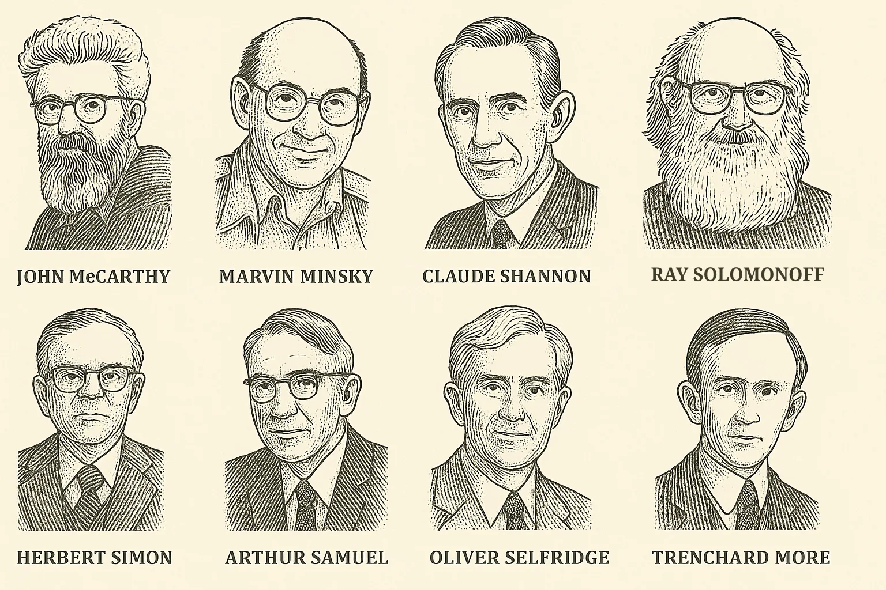
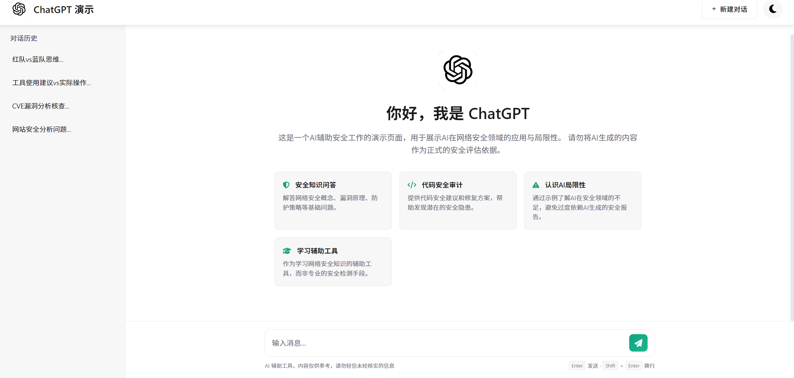

什么是 AI¶

这个词诞生于 1956 年。那年夏天，一群科学家在美国达特茅斯学院开了两个月的会，第一次把「让机器像人一样思考」这件事正式命名为人工智能。参会的人里包括 John McCarthy、Marvin Minsky、Claude Shannon、Herbert Simon——每一个名字后来都影响了计算机科学的走向。
AI 到底怎么定义？这个问题从 1956 年一路吵到今天，学界和产业界各有说法。
AI 发展里程碑：七十年走了多远¶
从达特茅斯会议到现在，AI 经历了「三起两落」——三次浪潮之间夹着两次寒冬。每次低谷都是对技术路径的反思，每次爆发都离不开算法、数据、算力三要素的共振。
flowchart LR
A1950["1950<br/>图灵测试提出"]
A1956["1956<br/>达特茅斯会议<br/>AI 正式诞生"]
A1958["1958<br/>感知机发明"]
W1969["1969<br/>XOR 困境<br/>神经网络降温"]
W1973["1973<br/>Lighthill 报告<br/>经费削减"]
B1980["1980s<br/>专家系统兴起"]
B1986["1986<br/>反向传播重新推广"]
B1989["1989<br/>LeNet 手写识别"]
B1997["1997<br/>深蓝击败卡斯帕罗夫"]
C1980["Late 1980s<br/>专家系统成本高<br/>第二次寒冬"]
D2006["2006<br/>CUDA 发布<br/>GPU 算力底座"]
D2012["2012<br/>AlexNet 夺冠<br/>错误率降至 15.3%"]
D2016["2016<br/>AlphaGo 击败李世石"]
D2017["2017<br/>Transformer 提出"]
D2020["2020<br/>GPT-3 发布<br/>1750 亿参数"]
D2022["2022<br/>ChatGPT 发布<br/>2 个月月活破亿"]
D2023["2023<br/>GPT-4 多模态突破"]
D2025["2025<br/>智能体深入发展"]
A1950 --> A1956 --> A1958 --> W1969 --> W1973 --> B1980 --> B1986 --> B1989 --> B1997 --> C1980 --> D2006 --> D2012 --> D2016 --> D2017 --> D2020 --> D2022 --> D2023 --> D2025
class A1950,A1956,A1958 wave1
class W1969,W1973,C1980 winter
class B1980,B1986,B1989,B1997 wave2
class D2006,D2012,D2016,D2017,D2020,D2022,D2023,D2025 wave3
classDef wave1 fill:#fff3e0,stroke:#fb8c00,stroke-width:2px,color:#3e2723;
classDef wave2 fill:#e3f2fd,stroke:#1e88e5,stroke-width:2px,color:#0d47a1;
classDef wave3 fill:#fce4ec,stroke:#e91e63,stroke-width:2px,color:#880e4f;
classDef winter fill:#eceff1,stroke:#607d8b,stroke-width:2px,color:#263238;
linkStyle default stroke:#9e9e9e,stroke-width:2px;几个值得记住的关键节点：
| 年份 | 事件 | 为什么重要 |
|---|---|---|
| 1950 | 图灵测试（Turing Test） | 第一次给出「机器能不能思考」的判据 |
| 1956 | 达特茅斯会议 | AI 正式成为一门学科 |
| 1966 | ELIZA 聊天机器人 | 世界上第一个聊天程序，用模式匹配模拟心理治疗对话。它的创建者 Weizenbaum 后来反而成了 AI 伦理的批评者——他发现用户居然会对一个这么简单的程序产生情感依赖 |
| 1969 | 感知机 XOR 困境 | Minsky 等人证明单层感知机无法解决异或问题，直接导致神经网络研究被冷落近 15 年 |
| 1997 | 深蓝击败卡斯帕罗夫 | AI 首次在正式比赛中战胜人类世界冠军。但深蓝靠的是暴力穷举，它并不理解棋局 |
| 2012 | AlexNet 夺冠 | 深度学习第一次在大规模竞赛中碾压传统方法，引爆了工业界的关注 |
| 2016 | AlphaGo 击败李世石 | 围棋被认为是最复杂的棋类，AlphaGo 用深度学习 + 强化学习攻破了这个「人类最后的堡垒」 |
| 2022 | ChatGPT 发布 | 2 个月月活破亿，成为历史上增长最快的消费者应用，AI 从学术圈正式走向大众 |
💡 规律：每一次低谷都是对技术路径的反思，每一次爆发都是算法、数据、算力三要素协同共振的结果。
别纠结定义，先看 AI 能做什么¶
别把 AI 绑定到某个具体产品上。只要能让计算机表现出「像智能一样」的能力，都可以放进 AI 这张大地图里。
常见的 AI 任务：
-
识别
识别人脸、识别语音、识别图片中的物体
-
分类
判断垃圾邮件、标记恶意样本、给用户打标签
-
预测
预测天气、预测故障、预测用户可能点击什么
-
推荐
视频推荐、商品推荐、内容推荐
-
生成
写文字、画图、生成代码、合成语音
-
规划与对话
路径规划、资源调度、任务拆解、问答、客服、翻译、总结
你手机上的人脸解锁是 AI，外卖 App 猜你今天想吃什么的算法是 AI，ChatGPT 也是 AI。
它们都属于 AI，但走的技术路线并不一样。
AI 就是一张大地图，上面每一项任务对应不同的分支和路线。
AI 就在你身边：真实案例¶
上面六类任务，每一类都能在日常生活中找到你已经在用的产品：
| AI 任务 | 你可能在用的产品 | 背后的技术 |
|---|---|---|
| 识别 | 手机人脸解锁、支付宝刷脸支付 | 计算机视觉（Computer Vision） |
| 分类 | 邮箱自动过滤垃圾邮件 | 文本分类（Text Classification） |
| 预测 | 天气预报、高德地图预估到达时间 | 时序预测、回归模型 |
| 推荐 | 抖音推荐、淘宝「猜你喜欢」、B 站推荐页 | 协同过滤、深度推荐模型 |
| 生成 | ChatGPT 写文案、Midjourney 画图、Suno 生成音乐 | 大语言模型、扩散模型 |
| 规划与对话 | 小爱同学 / Siri 语音助手、高德路线规划 | 语音识别 + NLP、路径规划算法 |
你不需要理解这些技术名词——后面会逐个展开。现在只要意识到：AI 已经渗透到你的日常生活里了，只是很多时候你没注意到。
AI 有很多条技术路线¶

很多人第一次接触 AI，是从 ChatGPT 开始的。时间一久，就很容易把 AI 和聊天机器人画上等号——这可太窄了。
AI 这门学科已经发展了几十年，里面积累了很多路线。Hello-AI 里你会主要接触到以下几条：
规则系统
最早的 AI 实现方式，直白到不能再直白。
stateDiagram-v2
direction LR
[*] --> 收到请求
收到请求 --> 检查用户名
检查用户名 --> 提示不能为空: 用户名为空
检查用户名 --> 检查金额: 用户名不为空
检查金额 --> 人工审核: 金额超过阈值
检查金额 --> 系统执行: 金额未超阈值
提示不能为空 --> [*]
人工审核 --> [*]
系统执行 --> [*]- 人写好条件 → 系统执行
- 如果用户名为空，提示「不能为空」
- 如果金额超过阈值，走人工审核
规则系统好处明显：稳定、可控、好解释。麻烦也明显：一遇到复杂场景，规则会爆炸。你没法为每一种可能的情况提前写好规则。
机器学习
stateDiagram-v2
direction LR
[*] --> 收集带标签数据
收集带标签数据 --> 训练模型
训练模型 --> 学习规律
学习规律 --> 识别特征
识别特征 --> 输出预测结果
输出预测结果 --> 评估效果
评估效果 --> 部署应用: 表现良好
评估效果 --> 重新训练: 效果不佳
收集带标签数据 --> 偏见进入训练: 数据有偏见
偏见进入训练 --> 训练模型
训练模型 --> 偏见模型: 学到偏见
偏见模型 --> 输出有偏差结果
输出有偏差结果 --> 让模型从数据里学规律给它大量带标签的样本，模型自己学会：
- 哪些特征更像垃圾邮件
- 哪些行为更像异常登录
- 哪些商品更可能被点击
它比规则系统灵活很多。代价也很明确：非常依赖数据质量。数据有偏见，学出来的模型就会有偏见。
深度学习
flowchart LR
ML[机器学习] --> DL[深度学习]
DL --> NN[多层神经网络]
NN --> Pattern[处理复杂模式]
Pattern --> CV[图像识别]
Pattern --> ASR[语音识别]
Pattern --> NLP[自然语言处理]
CV --> AlexNet[2012 年 AlexNet]
ASR --> E2E[端到端神经网络]
NLP --> Translate[翻译]
NLP --> QA[问答]
NLP --> Replace[逐步取代传统统计方法]
DL --> LLM[大模型 / LLM]
LLM --> Foundation[底层基本走深度学习路线]
深度学习是机器学习里的一条重要路线。它用多层神经网络来处理更复杂的模式。
它的突破让 AI 在以下领域大幅超越了之前的水平：
- 图像识别：2012 年 AlexNet 在 ImageNet 竞赛中把错误率从 26% 降到 15.3%，直接引爆了工业界对深度学习的关注
- 语音识别：端到端的神经网络模型让语音转文字的准确率有了质的提升
- 自然语言处理：从翻译到问答，深度学习方法逐步取代了传统的统计方法
今天大家口中说的「大模型」，底层基本都走的是深度学习这条路。
大模型 / LLM
journey
title 用户使用 LLM 完成文本任务
section 输入任务
提出问题或需求: 3: 用户
补充上下文材料: 4: 用户
section 模型生成
LLM 理解上下文: 4: LLM
生成最可能的回答: 4: LLM
section 人类判断
检查事实是否准确: 3: 用户
判断逻辑是否可靠: 3: 用户
修改和二次追问: 4: 用户
section 外部增强
接入搜索或资料库: 5: 工具
用新信息修正回答: 5: LLMLLM 是 Large Language Model 的缩写，中文叫「大语言模型」。它是深度学习里偏语言方向的一类模型。
特点是在海量文本上训练，参数规模动辄几百亿到几千亿。你熟悉的 ChatGPT、Claude、DeepSeek、通义千问，都是 LLM 往上再包一层的产品。
LLM 擅长文本类任务：问答、总结、改写、抽取、生成草稿、在上下文中推理。
LLM 有三个明显的边界：
- 正确性没法自动保证：它生成的是「最可能的回答」，跟「经核实的事实」还有距离
- 知识有截止线：训练结束之后发生的事情，需要搜索或其他外部工具补上
- 长链条精确逻辑不稳定：算账、审计、严格的因果推理，需要额外验证
一张图理清关系¶
把这些概念串起来，关系是这样的：
AI（人工智能总称）
└─ 机器学习（从数据里学规律）
└─ 深度学习（用深层神经网络处理复杂模式）
└─ LLM（大语言模型，偏语言方向）
└─ ChatGPT 等产品（LLM + 产品包装）
LLM 只是 AI 这张大地图里的一条路线——记住这个定位就好。
如果你在跟别人聊 AI 时，对方默认「AI = ChatGPT」，大概率是被产品宣传带偏了。AI 这张地图远比聊天机器人宽。
AI 的三个层次：你现在看到的，只是起点¶
AI 研究里还有一个常用的分层框架，把 AI 分成三种级别。这个框架做了简化，用来帮新人建立坐标系足够了。
ANI：弱人工智能 / 窄人工智能
ANI 就是现在你每天在用的所有 AI。
它在某一个特定任务上可以做到非常强——AlphaGo 能赢李世石，医学影像 AI 能比放射科医生更快找到肿瘤，GPT-4 能通过律师资格考试——但它的能力无法迁移到别的领域。
会下围棋的系统，换成麻将就要重新设计；能写代码的模型，放到看病场景也要重新训练和校准。每次换任务，都要重新适配。
当前 AI 的真实水平就是这样：单任务可以很强，通用的理解和适应能力还差得远。
注意，当前最强大的 LLM 仍然停在 ANI 这一层，离 AGI 还有距离。
AGI：通用人工智能
AGI 是一个还没实现的目标：让机器在任何认知任务上达到甚至超过人类的水平。
它需要的能力远超单任务表现，还要能跨领域迁移学习。学了棋，能把某些思路用到医疗诊断；学了翻译，能迁移到法律推理；还能从少量样本中泛化，做因果推理，跳出单纯的统计相关性，甚至自主设定目标、分解任务、在环境变化时调整策略。
AGI 什么时候能实现？没人知道。乐观的人说十几年，悲观的人说永远。但无论时间线如何，它目前仍然停留在科研前沿，离日常可用的产品还有距离。
ASI：超级人工智能
ASI 是比 AGI 更远的概念：在所有领域都远超人类的智能。
它在理论上可能具备递归自我改进的能力——自己修改自己的架构，越改越聪明，最终引发「智能爆炸」。但这一切都是高度推测性的，目前没有任何实现路径。
对新人来说，理解这三个词就够了：
-
ANI：现在的 AI
专精特定任务，迁移不了。你今天接触到的所有 AI，基本都在这一层。
-
AGI：未来的目标
能像人类一样通用地思考和解决问题，目前还没有实现。
-
ASI：更远的假设
在所有领域都远超人类的智能，目前属于高度推测。
这三个词不用背学术定义，抓住一个判断就行：今天接触到的 AI，基本都在 ANI 这一层。ChatGPT 看起来很「聪明」，跟人的大脑走的是两套机制。
AI 的能力边界¶
搞清楚 AI 的能力边界，比记一百个名词管用。
LLM 很擅长：
- 总结长文本
- 改写润色
- 翻译
- 按模板生成内容
- 在已知知识范围内回答问题
- 代码补全和简单调试
LLM 需要谨慎使用的场景：
- 稳定给出事实正确的答案（它会自信地胡说，这叫「幻觉」）
- 处理训练截止时间之后的新信息
- 严格的数学计算和精确逻辑推理
- 在长链条任务中保持一致性
- 理解情感和语境中的微妙含义
- 需要常识判断的开放式场景
动手试试：在线体验 AI¶
光看概念不如上手试一试。以下是几个免费的在线体验，不需要安装任何软件，打开浏览器就能玩：
🎨 Quick, Draw! —— 让 AI 猜你画什么
你有 20 秒时间画一个物体（猫、自行车、杯子……），AI 会实时猜你画的是什么。
背后的技术：神经网络图像识别。AI 从数百万张简笔画中学会了「猫大概长什么样」的模式。
试试看：故意画得潦草一点，观察 AI 还能不能认出来。想想：为什么有时候 AI 猜得比你朋友还准？
🧠 Teachable Machine —— 训练你自己的 AI 模型
地址：teachablemachine.withgoogle.com
用摄像头拍几张照片作为「类别 A」，再拍几张作为「类别 B」，几秒钟就能训练出一个能区分它们的 AI。
背后的技术：迁移学习（Transfer Learning）。AI 已经在海量图片上预训练过，你只需要提供少量样本就能让它识别新类别。
试试看：分别拍「举手」和「不举手」两组照片，然后用举手来控制网页播放/暂停。体会一下「少量数据就能训练」是什么感觉。
📊 TensorFlow Playground —— 可视化神经网络学习过程
在网页上直接调整神经网络的层数、神经元数量、激活函数，然后点击播放，看模型如何一步步学会分类数据点。
背后的技术：前馈神经网络 + 反向传播。
试试看：先用默认设置跑一次，然后把隐藏层从 2 层改成 6 层，观察训练速度和效果的变化。这就是「模型越深越强，但也越容易过拟合」的直观感受。
💬 和一个 1966 年的聊天机器人对话
地址：masswerk.at/elizabot/eliza.html
ELIZA 是 1966 年 MIT 的 Joseph Weizenbaum 写的程序，用模式匹配模拟心理治疗师。你说话，它回话，看起来好像能理解你——但它的代码总共不到 200 行。
试试看：和它聊几句，然后问自己：你有没有那么一瞬间觉得它「真的在听」？这就是 ELIZA 效应——人类天生倾向于把理解投射到机器上。
八个常见误解¶
下面这些误解，是从大量 AI 科普中反复出现的问题里整理出来的。
误解 1：AI 像人一样思考
AI 没有意识、没有情绪、没有自我认知。它做的事情说到底就是：在数据里找模式，然后输出最可能的结果。它也能模拟对话，背后可没有什么「理解」和「感受」。
误解 2：AI 很快会有意识
意识来自极其复杂的生物演化，写几段代码离这件事还差得很远。当前 AI 底下跑的还是数学函数，谈不上真正拥有「想要」和「知道」。
误解 3：AI 会取代所有工作
历史上每次技术革命都会淘汰一些岗位，也会创造新的岗位。AI 会先接管工作里机械、重复的部分；创造力、同理心、批判判断，这些还得人来兜底。
误解 4：AI 始终客观公正
AI 从数据里学，数据又是人造的，里面经常带着人的偏见。这就会带来算法偏见。
一个真实的例子：2014 到 2017 年间，Amazon 开发了一套 AI 招聘工具，用 10 年的历史简历数据训练模型，自动给候选人打 1–5 星。结果发现，简历中包含「women's」（如"女子象棋俱乐部"、"女子学院"）等词汇时，系统会自动降分。原因很简单：过去技术岗位的录用者大多是男性，模型忠实地学到了这个偏见模式。
Amazon 后来想删掉明确的性别字段来修正问题，结果没用。教育背景、用词选择这些变量，照样可能带着性别信息。深层偏见根除不了，这个项目最终被放弃。
⚠️ 核心教训：删掉性别字段，删不掉性别偏见。如果训练目标本身有缺陷，AI 即使在技术上「正确运行」，输出依然是有偏差的。
误解 5：AI 会毁灭人类
当前 AI 最大的风险，主要来自人类对它的错误使用：深度伪造、自主武器、大规模监控。机器自己没有动机和目标，危险往往出在用机器的人身上。
误解 6：AI 比人类聪明
AI 在某些任务上可以碾压人类，比如下围棋、算大数。这些都属于窄智能。人类智能更通用，能适应、推理、感受、想象，还能在不同场景间迁移。两者的「聪明」不是一个维度。
误解 7：AI 能自己学习进步
即使是现在最前沿的模型，也需要大量人类参与：设计算法、选择数据、标注样本、评估结果、调整参数。离开这些持续输入，AI 就谈不上自动「进化」。
误解 8：AI 能解决我们所有的问题
AI 是工具，担不起救世主这个角色。那些源于贪婪、不平等和道德缺失的问题，最后还得人类社会自己处理。用得好，它是帮手；用不好，它会放大问题。选择权在人。
这章学完之后，你应该能做什么¶
读完这一章，你当然还不是 AI 专家。先做到这几件事就够了：
-
分清概念关系
能说清 AI、机器学习、深度学习、LLM 之间是什么关系。
-
看懂当前阶段
知道现在所有的 AI 都是弱人工智能（ANI），包括你用的 ChatGPT。
-
判断适用边界
能判断哪些问题适合交给 AI，哪些问题最好自己把关。
-
看穿标题党
遇到「AI 即将觉醒」「AI 要取代全人类」这类标题，能先停一下，判断它到底在说技术事实，还是在制造情绪。
练习题 / 小实验¶
练习 1：概念分类
以下哪些属于 AI？哪些不属于？为什么？
- (a) 手机计算器算 123 × 456
- (b) 微信语音转文字
- (c) Excel 排序一列数字
- (d) 高德地图预测到达时间
- (e) 自动贩卖机投币出货
参考思路
(b) 和 (d) 属于 AI。(b) 用了语音识别模型，(d) 用了时序预测模型。计算器 (a) 和 Excel 排序 (c) 是确定性算法，输出固定可预测，不需要从数据中学习。贩卖机 (e) 是机械逻辑，和 AI 无关。判断依据：是否需要从数据中学习模式。
练习 2：技术路线判断
下面这些场景分别更适合用规则系统还是机器学习？为什么？
- (a) 电梯按楼层停靠
- (b) 判断一封邮件是不是垃圾邮件
- (c) ATM 检查密码是否正确
- (d) 预测用户明天会不会打开某个 App
参考思路
- (a) 规则系统——楼层逻辑简单确定，无需从数据学习
- (b) 机器学习——垃圾邮件的形式千变万化，无法穷举规则
- (c) 规则系统——密码匹配是确定性判断
- (d) 机器学习——用户行为复杂多变，需要从历史数据中学习模式
练习 3：偏见识别
假设你要训练一个模型来预测「谁更适合担任 CEO」，训练数据是一家公司过去 20 年的 CEO 任命记录。这家公司历史上 95% 的 CEO 都是男性。
- (a) 模型可能会学到什么偏见？
- (b) 如果删除性别字段，能解决问题吗？
- (c) 你会怎么改进？
参考思路
- (a) 模型很可能学到「男性更适合当 CEO」的偏见模式
- (b) 不能。其他字段（如职业经历、教育背景、社交网络）可能仍然携带性别信息，就像 Amazon 招聘工具的案例
- (c) 可以：审视训练数据是否具有代表性、在评估阶段专门检测偏见指标、引入人工审核环节、定期审计模型输出的公平性
练习 4：动手实验
打开 Quick, Draw!，完成以下任务：
- 正常画 5 个物体，记录 AI 猜对几个
- 故意画得非常潦草，记录 AI 猜对几个
- 找一个你觉得 AI 不太可能认识的词（比如「emoji」或「wifi」），试试 AI 能不能认出来
思考：AI 的识别能力来自哪里？它为什么会「认识」或「不认识」某个东西？
参考思路
AI 的识别能力来自训练数据。训练集中有大量「猫」的简笔画，它就更容易认出你画的猫；训练集中很少出现某个概念，它就大概率认不出来。这也解释了为什么 AI 的表现会受文化和地区影响：训练数据覆盖不了所有人的经验。
延伸阅读¶
- 人工智能发展简史：从图灵测试到 GPT-5 —— 腾讯云开发者社区，完整梳理 70 年「三起两落」
- 微软 AI For Beginners 课程 —— 12 周 24 节课的免费入门课程，含动手实验
- Google ML Crash Course —— 谷歌出品的机器学习速成课，含浏览器内编程练习
- Why a 1960s Chatbot Left Its Creator Deeply Unsettled —— ELIZA 创建者 Weizenbaum 的故事，关于技术伦理的早期反思
下一步¶
分清了 AI 的大概范围之后，下一站建议看：